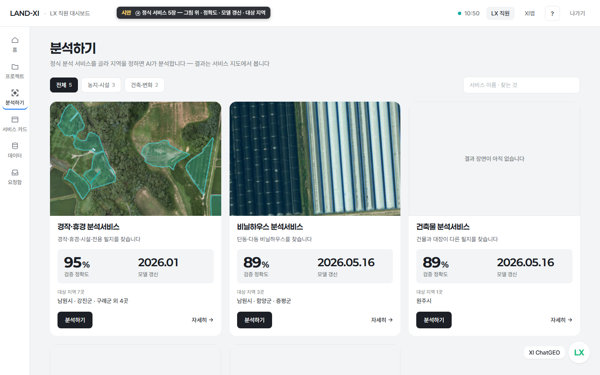

[목록][Land-XI] 분석하기 목록 재정리 — 13장에서 정식 서비스만
지금
13장 가운데 지금 분석할 수 있는 것은 5장뿐이고, 나머지 8장은 모델 등록 전(해양쓰레기 · 국토 변화 · 도로 · 생활환경 · 산림 · 인파 · 해외 2)입니다. 해양쓰레기 1,857건 · 국토 변화 456건은 결과만 서버에 있고 다시 돌릴 모델이 없습니다. 이름은 '~행정서비스 · ~실태조사 서비스 · 건축물'처럼 제각각입니다.
제안
남김 5장(이름은 '{대상} 분석서비스'): 경작·휴경 분석서비스(← 영농관리 행정서비스 · 검증 정확도 95% · 모델 갱신 2026.01 · 남원 운영 + 강진 · 구례 · 여수 · 목포 시범 + 익산 · 시흥 첫 결과 전 = 7곳) · 비닐하우스 분석서비스(89% · 2026.05.16 · 남원 · 함양 · 증평) · 건축물 분석서비스(89% · 2026.05.16 · 원주) · 주차장 분석서비스(89% · 2026.05.16 · 천안 서북 · 여주) · 곤포사일리지 분석서비스(96% · 2026.09.30 · 보령). 뺌 8장: 해양쓰레기 · 국토 변화(결과는 있으나 모델 등록 전 — 모델이 등록되면 저절로 들어옴) · 도로 · 생활환경 · 산림 · 인파 · 해외 2(첫 결과 전). ⓐ 대상마다 한 장 = 5장 — 비닐하우스 · 건축물 · 주차장은 같은 4분류 모델 한 개를 쓰지만 찾는 대상이 달라 따로 둡니다(정확도 89%는 그 모델 전체 값이라 셋이 같습니다). ⓑ 모델마다 한 장 = 3장 — '건물 · 주차장 · 비닐하우스 분석서비스' 한 장으로 합치고 상세에서 층으로 가릅니다(카드 수가 줄고 정확도 중복이 없지만, 지자체가 '비닐하우스'만 찾아 들어올 때 이름에 바로 안 보입니다).
보는 곳
- app.land-xi.dev/landxi/v3/lx-analyze/아이디 test@lx.or.kr · 임시 비밀번호왼쪽 메뉴 '분석하기' — 지금 13장

